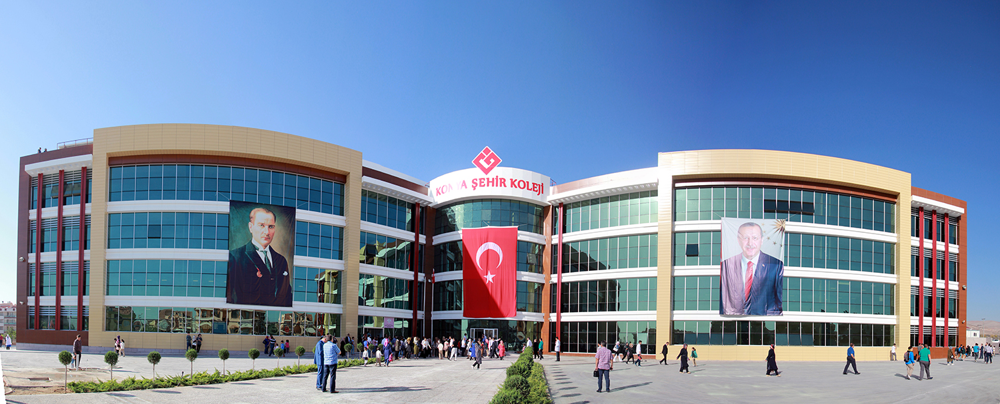

The website is prepared as a demonstration for a homework.
Konya Şehir College
Şehir College serves as kindergarten, primary school, secondary school and high school. English is a compulsory foreign language, German lessons are given in high school as a second language. It is important to us not only the academic success of our students but also how successful they are in social fields. Therefore, besides sports lessons, music and painting lessons are also offered to our students.
We start the day at 9 am with an buffet breakfast. We have 4 lesson hours after breakfast. Afterwards, there is lunch and rest time. We have an 4-hour class schedule in the afternoon. In total, 8 hours per day are given.
Our teachers, who are very successful in their fields and have had an academic career, are ready for the education of our students. Each of our teachers approach their students with tolerance and understanding, encouraging them to think freely and express their thoughts freely. Our goal in education is to raise people who can think freely, express their thoughts freely, stand on their own feet, and approach other thoughts with tolerance.
We strive to make our students more sensitive to the environment and animals. Together with the students, we deliver the leftovers from our cafeteria to animal shelters. We organize social activities such as theater and cinema to socialize. we organize trips to science center, museum, historical places, and enable them to discover the history of our city in person. We enable our youth to engage in sports with basketball, volleyball and football competitions between high schools.